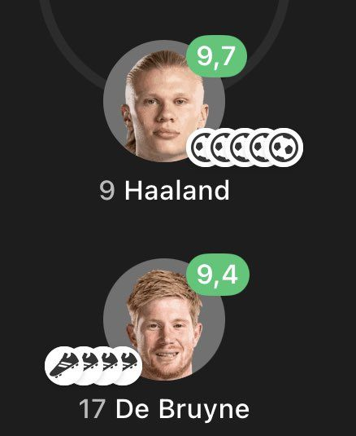

Manchester City’s 2022/23 season stands as the greatest campaign in the club’s history and one of the most dominant in European football, culminating in a legendary Continental Treble—only the second ever achieved by an English club. Under Pep Guardiola’s tactical brilliance, City played 61 matches across all competitions, recording 44 wins, scoring an astonishing 151 goals (2.47 per game), and dominating opponents with 63.6% average possession. Powered by Erling Haaland’s record-shattering 52-goal debut campaign, Kevin De Bruyne’s 28 assists, and Rodri’s midfield mastery, City overcame an eight-point deficit to claim a third consecutive Premier League title, defeated rivals Manchester United 2–1 in a historic FA Cup final, and finally conquered Europe by beating Inter Milan 1–0 in Istanbul to lift their maiden UEFA Champions League trophy.
Manchester City’s 2022/23 Premier League campaign was nothing short of legendary.
Pep Guardiola's side secured their third consecutive Premier League title (and fifth in six seasons) in dominant fashion,
overcoming a relentless challenge from Arsenal to lift the trophy.
| stat category | record/detail |
|---|---|
| GOALS SCORED | 94 GOALS |
| GOALS CONCEDED | 33 GOALS |
| AVERAGE POSSESION | 65% PER 90 |
| WIN RATE | 73.7% |
| GOALS RATIO PER 90 | 2.47 PER 90 |
Manchester City’s 2022/23 FA Cup campaign was a masterclass in total dominance, culminating in their seventh FA Cup trophy and the second leg of their historic Continental Treble.
Pep Guardiola’s side navigated one of the toughest possible draws with a 100% win record (6 wins from 6 matches), knocking out Premier League heavyweights Chelsea (4–0) and Arsenal (1–0) in the early rounds before cruising past Bristol City, Burnley (6–0), and Sheffield United to reach the final. In fact, City did not concede a single goal until the final at Wembley.
In the first-ever Manchester Derby FA Cup Final, captain İlkay Gündoğan wrote his name into history by volleying home the fastest goal in FA Cup Final history—just 12 seconds after kickoff—before adding a second-half winner to secure a 2–1 victory over Manchester United. Across the entire tournament, City scored 19 goals, conceded just 1, and maintained an average possession of roughly 66%, cementing an unforgettable domestic double.
| STAT category | record/details |
|---|---|
| GOALS SCORED | 19 GOALS |
| GOALS CONCEDED | 1 GOAL |
| AVERAGE POSSESION PER 90 | 66% ACROSS THE TOURNAMENT |
| WIN RATE | 100% WIN RATE |
| GOAL RATIO PER 90 | 3.17 GOALS PER GAME |

Manchester City’s 2022/23 UEFA Champions League triumph was the crowning jewel of their historic Treble-winning season. Going completely unbeaten across all 13 matches (8 wins and 5 draws), Pep Guardiola’s side combined ruthless attacking power with defensive steel—scoring 32 goals (2.46 per game) while conceding just 5 and averaging 61.5% possession. After dismantling European heavyweights RB Leipzig (8–1 agg), Bayern Munich (4–1 agg), and Real Madrid (5–1 agg) in the knockout rounds, City faced Inter Milan in the Istanbul final, where Rodri’s composed second-half strike sealed a 1–0 victory and delivered the club's long-awaited maiden European Cup.
| STATS category | record/details |
|---|---|
| GOALS SCORED | 32 GOALS |
| GOALS CONCEDED | 5 GOALS(LEAST) |
| AVERAGE POSSESION PER 90 | 61.5% ACROSS THE TOURNAMENT |
| WIN RATE | 61.5% (8 Wins out of 13 Matches) |
| GOALS RATIO PER 90 | 2.46 Goals per match |
